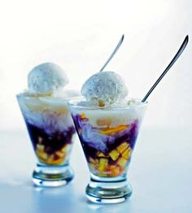
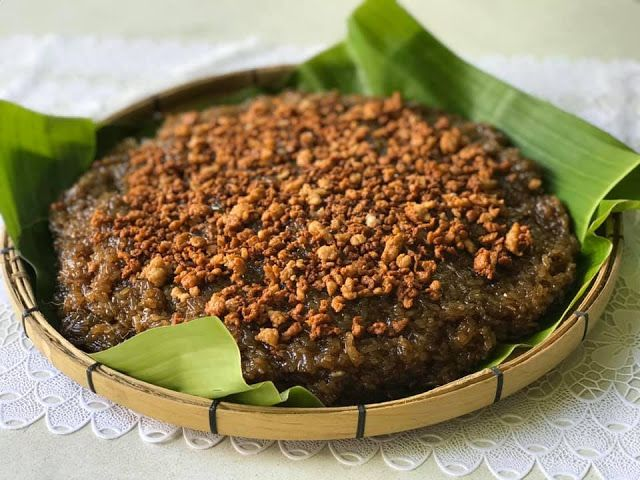
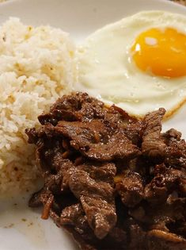
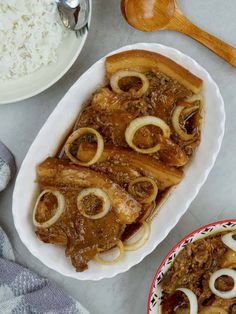
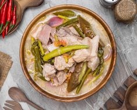

| Images | Explanations and Details | Ingredients: |
|---|---|---|
| Halo-Halo | Put ice first of all in a tall glass, and put evaporated milk to put on some flavor, and add on the fruits, the ice cream and the leche flan. |
A variety of ingredients can be used, such as: Sweetened chickpeas, red beans, and white beans Nata de coco (coconut gel) Macapuno strings (coconut sport) Sweetened jackfruit Tapioca pearls Colorful jellies Ube halaya (purple yam jam) Leche flan Pinipig (flattened, toasted rice) Fresh fruit |
| Biko | Soak rice overnight in the water. Preheat oven to 350 degrees F (175 degrees C). Grease a 9x13 inch baking pan. Cook the soaked rice over medium heat in a saucepan with the soaking water, 1/2 can of coconut milk, and white sugar, stirring constantly, until tender and thickened, about 20 minutes. Pour into the prepared baking pan. Stir together the brown sugar, remaining 1/2 can of coconut milk, and coconut preserves in a small saucepan, and bring to a boil. Pour the mixture carefully over the rice. Bake in the preheated oven until the topping thickens, about 25 minutes. Cool completely; cut into squares to serve. |
4 cups uncooked glutinous white rice 6 cups cold water 1 (14 ounce) can coconut milk, divided 1 ⅓ cups white sugar 1 ⅓ cups brown sugar 3 tablespoons coconut preserves (such as Phil Supreme®) |
Puto |
Grease small cake molds or ramekins that will fit in a steamer basket. Mix flour, sugar, and baking powder together in a bowl. In a separate large bowl, scramble eggs with evaporated milk and water. Fold dry mixture into eggs until evenly blended. Fill the prepared molds 2/3 of the way up with batter and top with shredded cheese. Fill a wok or a saucepan that will hold a steamer basket with a few inches of water. Bring water to a boil over medium-high heat. Place the molds into a steamer basket, place over boiling water, and cover. Steam until a toothpick inserted in the center of one of the putos comes out clean, about 30 minutes. Cool on a wire rack and serve warm or at room temperature. |
4 cups all-purpose flour 2 cups white sugar 1 tablespoon baking powder 6 eggs 1 (12 fluid ounce) can evaporated milk 1 ½ cups water 2 ¼ cups Edam cheese, shredded |
| Images | Explanations and Details | Ingredients: |
|---|---|---|
| Beef Tapa | Combine soy sauce, calamansi juice, garlic, sugar, salt, and pepper in a non-reactive bowl. Stir until sugar and salt are dissolved. Add beef and massage to coat it fully with marinade. Refrigerate overnight to cure. Drain the meat from the marinade. Heat oil in a wide pan. Add beef in a single layer and cook until liquid expelled from the meat is almost absorbed. Add more oil and cook until the meat is lightly browned and caramelized. Remove from pan and cut into serving portions. Serve hot. |
A variety of ingredients will be used: Beef Sirloin, Soy Sauce, Sugar, Garlic, Oil, Calamansi, Pepper ,and Salt |
| Pork Steak | Preheat the oven to 350 degrees F (175 degrees C). Heat oil in a large, heavy skillet over medium-high heat. Brown pork steaks for 3 to 5 minutes on each side. While browning, season both sides steaks with onion powder, garlic powder, salt, and black pepper. Transfer steaks to a 9x13-inch casserole dish; sprinkle with chopped onion and sliced mushrooms. Combine mushroom soup, water, onion soup mix, and Worcestershire sauce in a small bowl; mix until smooth, then pour over steaks. Cover dish with aluminum foil. Bake in the preheated oven for 90 minutes. |
2 tablespoons vegetable oil 4 pork steaks onion powder to taste garlic powder to taste salt and ground black pepper to taste 1 large onion, chopped 2 (4.5 ounce) cans sliced mushrooms, drained 2 (10.5 ounce) cans condensed cream of mushroom soup 1 (10.5 ounce) can water 1 (1 ounce) package dry onion soup mix 1 tablespoon Worcestershire sauce |
| Sinigang | Heat vegetable oil in a skillet over medium heat. Add onion; cook and stir until softened and translucent, about 5 minutes. Season with salt.Stir in ginger, tomatoes, and pork chops. Cover and reduce heat to medium-low. Turn the pork occasionally, until browned. Pour in water and tamarind soup base. Bring to a boil, then reduce heat and simmer until the pork is tender and cooked through, about 30 minutes.Stir in green beans and cook until tender. |
1 tablespoon vegetable oil 1 small onion, chopped 1 teaspoon salt 1 (1/2 inch) piece fresh ginger, chopped 2 plum tomatoes, cut into 1/2-inch dice 1 pound bone-in pork chops 4 cups water, more if needed 1 (1.41 ounce) package tamarind soup base (such as Knorr®) ½ pound fresh green beans, trimmed |